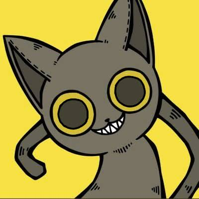

東大ボカロP同好会
ホーム
メンバー紹介
活動内容
入会案内

三森
役職:
代表
サークル代表の三森です。 高校時代に現実逃避で始めた作曲がここまで続くとは…。 当時ハマっていたモンハン・洋楽・EDMなどから影響を受けつつ、独自の世界観を作るため頑張っています。 頑張るぞ！頑張ろう！頑張るぞ！
代表作品
三森 - 箱庭の空 (feat.可不)
決意と共に歩いていくような冒険ソングです。
三森 - 盲目少女と錬金術師 (feat.初音ミク)
楽しくも切ないおとぎ話のようなサウンドを目指して作りました。
メンバー一覧に戻る